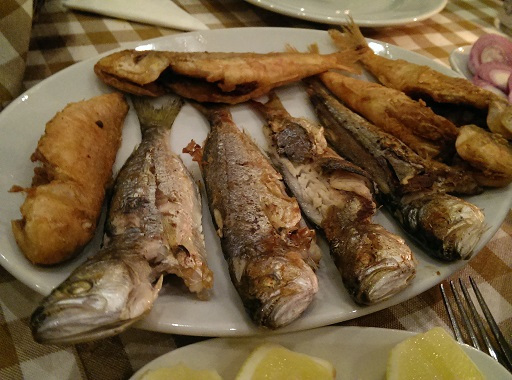
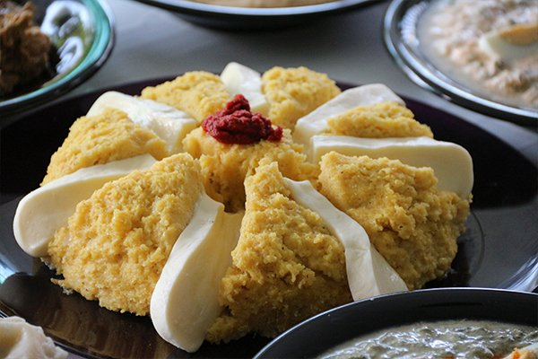
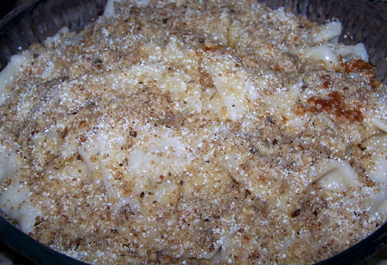

Çerkes tavuğu: Çerkez tavuğu çerkezlere has bir lezzet olup Düzce'de ise, sıkça yapılan ve Düzce'nin benimsediği ve özümsediği meşhur lezzetlerden biridir.

İsli balık: Çok zahmetli ama çok lezzetli bir diğer Düzce'nin meşhur lezzetidir.

Mamursa: Mamursa adı gibi çok ilginç ve değişik bir yemektir. Düzce'ye ait meşhur lezzetlerden
bir tanesidir.

Kaşık makarnası: Kaşık makarnası yine Düzce'de çokça yapılan makarna çeşitlerinden olup en
meşhur olanıdır.
YETİŞTİRİLEN BUĞDAY TÜRLERİ
Panda’s – Ekmeklik
Çukurova, Ege, Marmara ve Karadeniz bölgelerine tavsiye edilir.
Sagittario – Ekmeklik
Sahil ve geçit bölgeleri ile Güney Doğu Anadolu Bölgesinin sulanan alanları için
tavsiye edilir.
CEYHAN-99 – Ekmeklik
Sahil Bölgelerine tavsiye edilmektedir.
Cumhuriyet-75 – Ekmeklik
Sahil kuşağı için önerilir.
Ziya Bey – Ekmeklik
Sahil kuşağı için önerilir.
Çesit 1252 – Makarnalık
Sahil kuşağı için önerilir.
ŞÖLEN 2002 – Makarnalık
Sahil kuşağı bölgeler için önerilir.